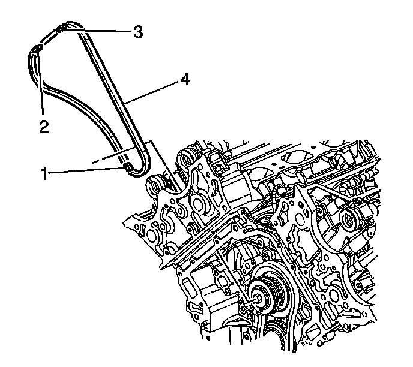
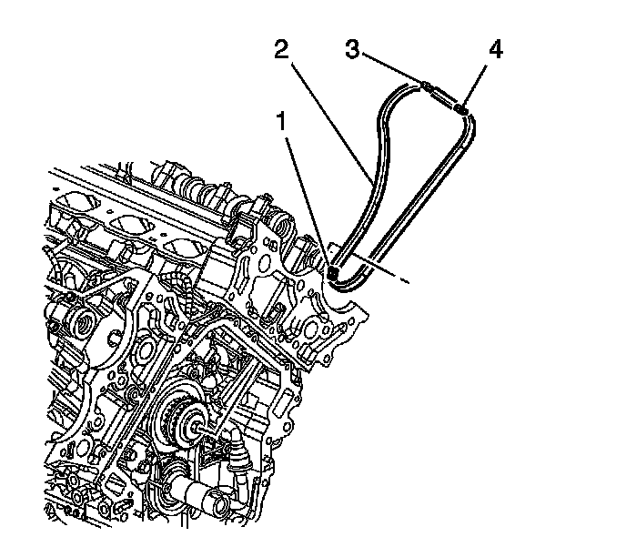
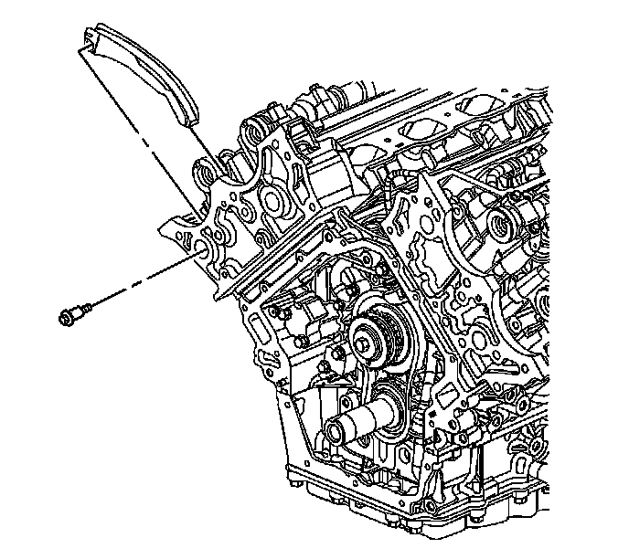
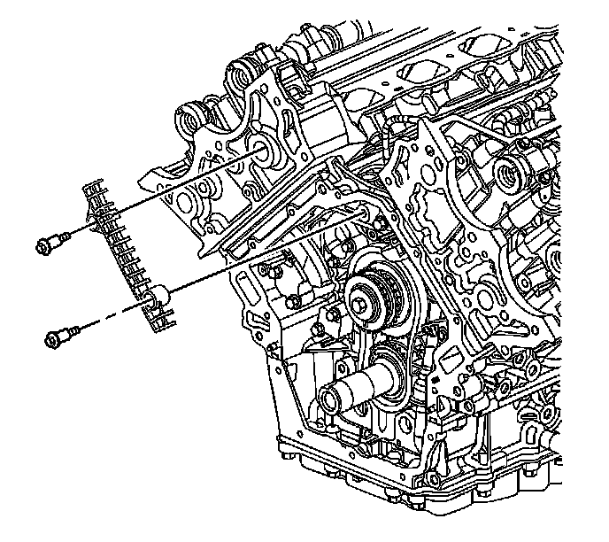
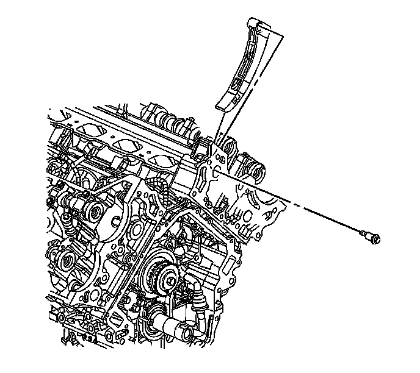
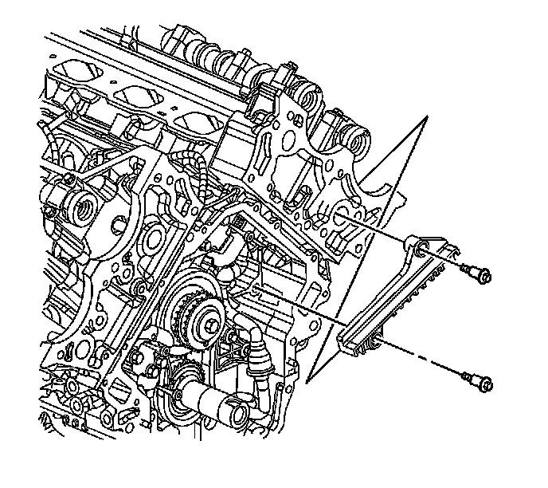
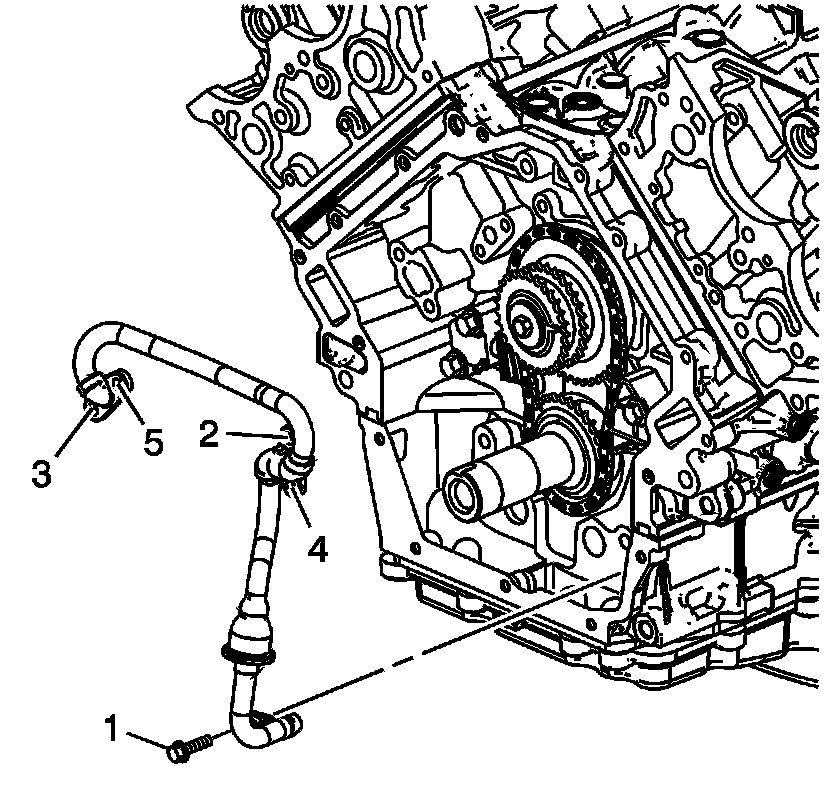
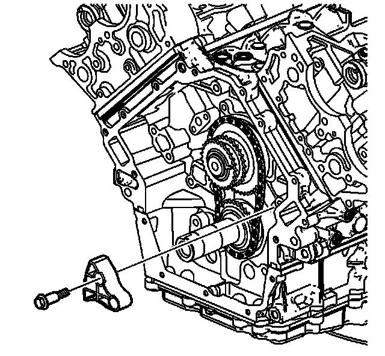

Primary Camshaft Drive Chain Guide Replacement
Primary Camshaft Drive Chain Guide Replacement
Removal Procedure

1. Remove the right side secondary camshaft drive chain (4). Refer to Secondary Camshaft Drive Chain Replacement - Right Side (Secondary Camshaft Drive Chain Replacement - Right) .

2. Remove the left side secondary camshaft drive chain (2). Refer to Secondary Camshaft Drive Chain Replacement - Left Side (Secondary Camshaft Drive Chain Replacement - Left) .

3. Remove the right side secondary camshaft drive chain shoe. Refer to Secondary Camshaft Drive Chain Shoe Replacement - Right Side (Secondary Camshaft Drive Chain Shoe Replacement - Right) .

4. Remove the right side secondary camshaft drive chain guide. Refer to Secondary Camshaft Drive Chain Guide Replacement - Right Side (Secondary Camshaft Drive Chain Guide Replacement - Right) .

5. Remove the left side secondary camshaft drive chain shoe. Refer to Secondary Camshaft Drive Chain Shoe Replacement - Left Side (Secondary Camshaft Drive Chain Shoe Replacement - Left) .

6. Remove the left side secondary camshaft drive chain guide. Refer to Secondary Camshaft Drive Chain Guide Replacement - Left Side (Secondary Camshaft Drive Chain Guide Replacement - Left) .

7. Remove the oil outlet tube (4) from the engine. Refer to Oil Pump Outlet Tube Removal (Overhaul) .

8. Remove the primary camshaft drive chain tensioner. Refer to Primary Camshaft Drive Chain Tensioner Replacement (Primary Camshaft Drive Chain Tensioner Replacement) .

9. Remove the bolts attaching the primary camshaft drive chain guide to the engine block.
10. Remove the primary camshaft drive chain guide.
11. Clean and inspect the camshaft timing drive components. Refer to Camshaft Timing Drive Components Cleaning and Inspection () .
Installation Procedure
Notice: Refer to Fastener Notice (Fastener Notice) .
1. Install the primary camshaft drive chain guide and retaining bolts.
Tighten the primary camshaft drive chain guide bolts to 25 N.m (18 lb ft).
2. Install the primary camshaft drive chain tensioner. Refer to Primary Camshaft Drive Chain Tensioner Replacement (Primary Camshaft Drive Chain Tensioner Replacement) .
3. Install the oil outlet tube (4) to the engine. Refer to Oil Pump Outlet Tube Installation (Overhaul) .
4. Install the left side secondary camshaft drive chain guide. Refer to Secondary Camshaft Drive Chain Guide Replacement - Left Side (Secondary Camshaft Drive Chain Guide Replacement - Left) .
5. Install the left side secondary camshaft drive chain shoe. Refer to Secondary Camshaft Drive Chain Shoe Replacement - Left Side (Secondary Camshaft Drive Chain Shoe Replacement - Left) .
6. Install the right side secondary camshaft drive chain guide. Refer to Secondary Camshaft Drive Chain Guide Replacement - Right Side (Secondary Camshaft Drive Chain Guide Replacement - Right) .
7. Install the right side secondary camshaft drive chain shoe. Refer to Secondary Camshaft Drive Chain Shoe Replacement - Right Side (Secondary Camshaft Drive Chain Shoe Replacement - Right) .
8. Install the left side secondary camshaft drive chain (2). Refer to Secondary Camshaft Drive Chain Replacement - Left Side (Secondary Camshaft Drive Chain Replacement - Left) .
9. Install the right side secondary camshaft drive chain (4). Refer to Secondary Camshaft Drive Chain Replacement - Right Side (Secondary Camshaft Drive Chain Replacement - Right) .